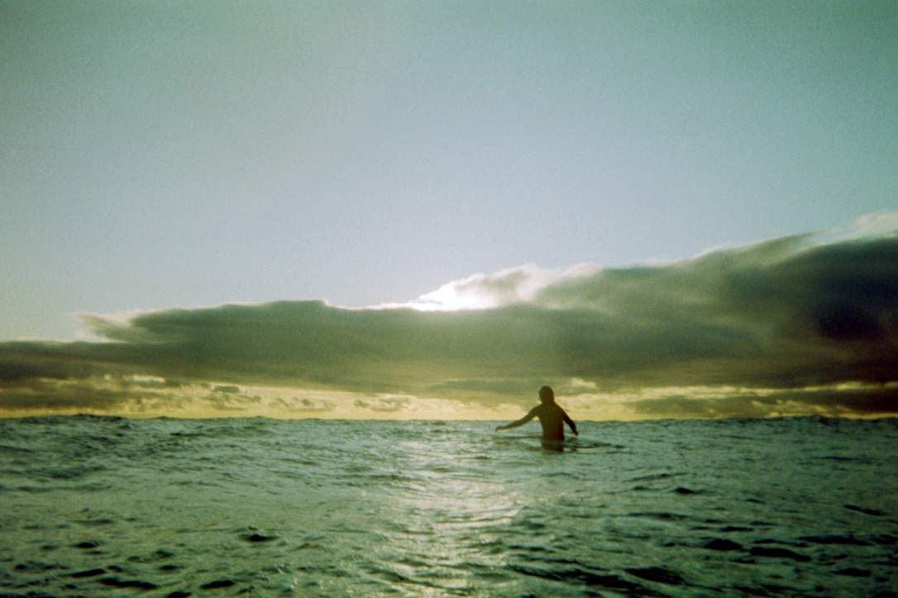
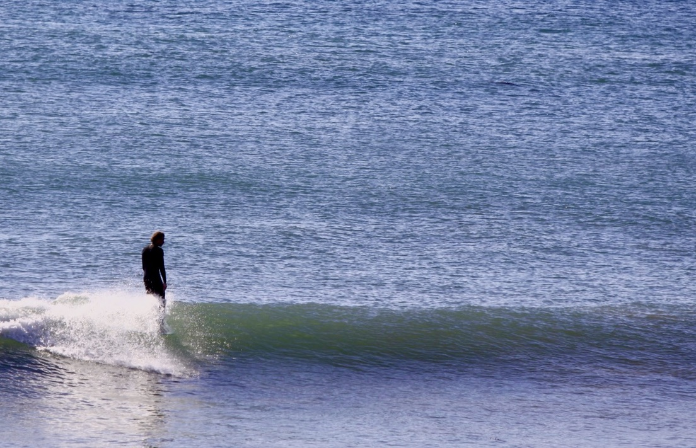
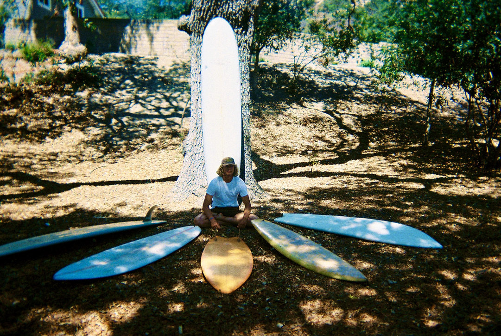
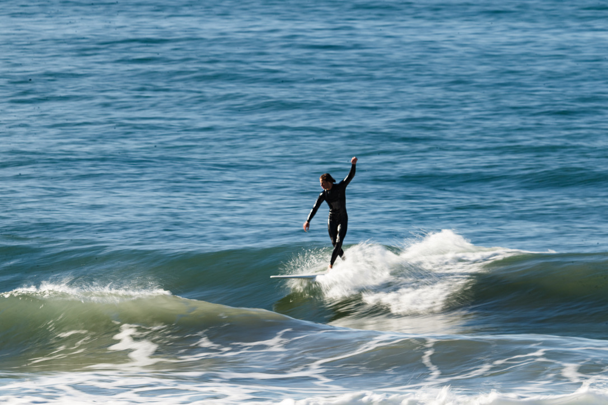
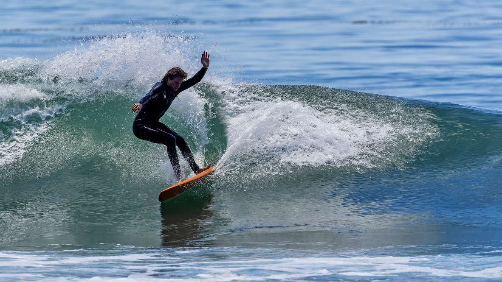

This is my personal blog where I like to break down the photographic moments of expression that were captured, and dive into the moment to reflect on the hydrodynamics that were applied to the given conditions and swell patterns of that day.
The photo above is from A well-groomed offshore winter day at the local watering hole, Solromar, CA. This day I was testing out my new handshaped 6'10 diamond tail single fin, and this WNW swell provided some proper waves to engage the rail and flow through some juicy green walls. Leaning into criitical moments with rushing waters falling behind me, I surrendered to my board, and was gifted an ephermal feeling of pride and freedom from this bottom turn. Shot by my father, Richard Berger.
There is a sublime feeling that overwhelms our very being when being immersed in nature. On a brisk winter evening around Solromar, CA, with just my one close buddy out, we savored our empty beach break and cherished the everlasting golden light that flows through the clouds and evening sky. We abide in emptiness and allow ourselves to become the moment and fill ourselves back up with joy, love, and harmony. Shot on Film by the one and only Giovanni Montoya.
This California winter day provided some crisp offshore NE winds and cruisy little peaks. With an abundance of corduroy lines rolling in, I found myself perched on the nose of my 9'8 Orbicular log shaped by Randy Schafer from WaveFront Surfshop in Ventura California. This board is perfect for levitating noseriding, trimming hrough every flat section, and cranking smooth cutbacks back into the pocket. Shot by Logan Cuccia.
The photo above was shot on film by Quentin Montoya. This shot was my quiver picture from the summer of 2021. Including my 5'9 keel fin fish, my 1972 6'9 diamond tail tube shooter, my 7'6 Orbicular Mysto Fusion, my 9'8 Orbicular Silverlining Log, my handshaped 6'10 diamond tail single fin, and my 7'1 swallow tail single fin. I've always been aesthetically drawn to single fins and longer rail lines in how they displace water flow, and connect turns a bit smoother than classic performance thrusters. This quiver is an evolution of my appreciation and infatuation of riding retro 70s style boards.

This shot above is influenced by my favorite surfer to this day, Andy Nieblas. A bendy soulful longboarder and singlefin shredder whose style completely absorbed my muscle memory. Riding my self shape diamond tail single fin, which was influenced by a number of boards that he has ridden, I flew up to the highline out of my bottom turn into a little soul arch slash on the shoulder. This shot is a complete expression of my approach in surfing, and is a tribute to my style hero, Mr. Andy Nieblas. Contraposto, Shot by Richard Berger.
This shot above is from a small offshore winter day, at a quaint little beach break around North Solromar, CA. Cross-stepping on my shandshaped 9'9 narrow squash tail single fin log, I started to find my groove in the punchy little ankle biters. A fun empty day with only my buddy Griffin out with me, we traded some fun little peaks and basked in the California winter sun. Speed-Blur shot by the talented Stephanie Drews.
This shot above is from my favorite Left-hand point break in my local region. Testing out my (new at the time) handshaped, Steve Lis inspired 5'9 gephart keel fin twin fish, on a glassy summer day. Sitting deepest out on the point, I traded some tasty little nuggets with some of the locals, and managed to link a few crisp carves on my new sled. This day I was just trying to find my flow and link some cruisy turns on rail, but this speedy little downcarve opened my mind up to surfing boards with a shorter rail line, after coming from a single fin longboarding background. Shot by local legend Ray Joyce.